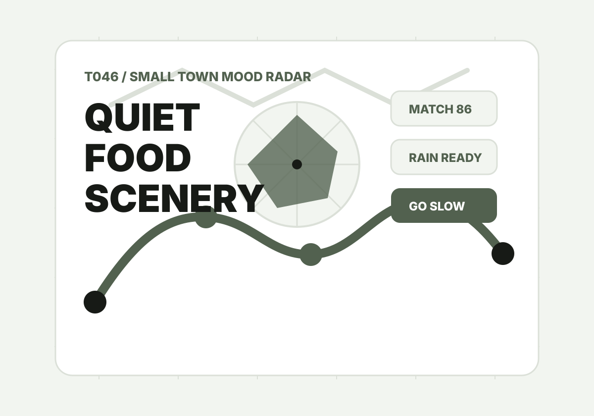

T046 / Small town mood radar
選小鎮，不是選名字，是選今天的空氣。
把候選小鎮放進來，調整交通、安靜、食物、風景、雨天備案與末班車風險，雷達會找出最符合你這次心情的小鎮，並把玩法丟回 ChillOut 延伸成完整行程。
Trip mood
先定義這趟小鎮旅行想要什麼
Town candidates
候選小鎮
Result
先放入至少兩個候選小鎮，再讓雷達挑出最適合的一個。
結果會包含排名、選擇理由、當日玩法、避雷條件、社群分享文與 ChillOut prompt。